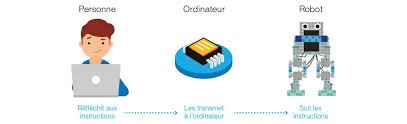
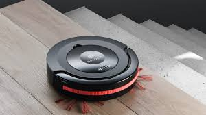
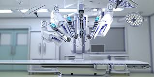

La robotique est l'ensemble des techniques permettant la conception et la réalisation de machines automatiques ou de robots. L'ATILF définit le robot de la manière suivante : « Appareil effectuant, grâce à un système de commande automatique à base de micro-processeur, une tâche précise pour laquelle il a été conçu dans le domaine industriel, scientifique, militaire ou domestique ».
La robotique industrielle est officiellement définie par l'Organisation Internationale de Normalisation (ISO) comme étant un système commandé automatiquement, multi-applicatif, reprogrammable, polyvalent, manipulateur et programmable sur trois axes ou plus.
Les applications typiques incluent les robots de soudage, de peinture et d'assemblage. L'avantage de la robotique industrielle est sa rapidité d'exécution et sa précision ainsi que la répétition de cette précision dans le temps.
Un robot domestique est un robot de service personnel utilisé pour des tâches ménagères. On estime à 3 540 000 le nombre de robots domestiques en 2006, avec une estimation de 950 000 robots industriels.
Les robots domestiques sont utilisés par exemple en vaisselle, en repassage, en nettoyage et en cuisine. Ils peuvent également être utilisés dans le domaine de la restauration et dans la construction.
Un robot militaire, aussi appelé arme autonome, est un robot, autonome ou contrôlé à distance, conçu pour des applications militaires. Les drones sont une sous-classe des robots militaires.
Des systèmes sont déjà actuellement en service dans un certain nombre de forces armées, qui s'avèrent efficaces. Le drone "Predator", par exemple, est capable de prendre des photographies de surveillance, et même à lancer des missiles air-sol AGM-114N "Hellfire" II ou des GBU-12 "Paveway" II dans le cas du MQ-1 et du MQ-9. Les études se poursuivent car ce type d'engin offre de nouvelles possibilités aux militaires.
Un robot médical est un système robotique utilisé dans le cadre d'une application thérapeutique, par exemple lors d'une chirurgie ou au cours d'un programme de réhabilitation neuromotrice. Il fait partie du domaine de la robotique. Du fait des contraintes importantes en matière de sécurité, ce type de robot est en général doté d'un faible niveau d'autonomie.
Le premier robot chirurgical au monde est le Arthrobot, développé et utilisé pour la première fois à Vancouver en 1983. L'équipe à l'origine de ce robot était constituée du docteur James McEwen, ingénieur biomédical Outre ce robot assistant chirurgien qui donnait les instruments chirurgicaux par commande vocale, on peut citer, parmi les autres appareils robotisés développés à la même époque, un bras robotisé de laboratoire médical.
